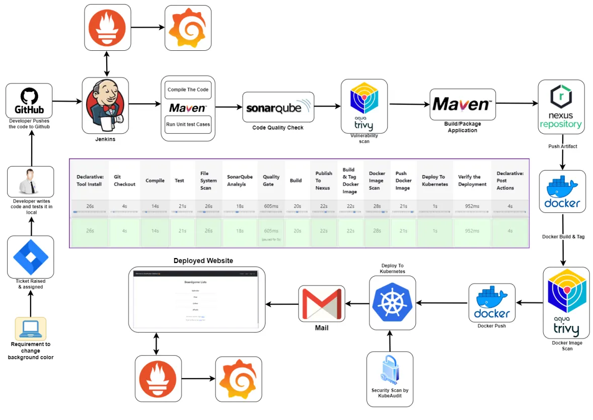

I Built a Full Corporate-Style CI/CD Pipeline on AWS with Jenkins, Kubernetes, SonarQube, Nexus, Docker, Prometheus, and Grafana

Full pipeline architecture — from developer push to deployed application with monitoring
I recently completed a personal DevOps project where I built a full end-to-end CI/CD pipeline from scratch in a way that mirrors a real corporate workflow. This was not just about getting an app deployed. The goal was to simulate how a DevOps engineer would actually handle infrastructure, security checks, artifact management, containerization, Kubernetes deployment, notifications, and monitoring in a real environment.
Tools Used
Project Goal
The idea was to take a Java application, push it to a private GitHub repository, and automate the complete lifecycle:
- Pull source code from GitHub
- Compile the application
- Run unit tests
- Scan code quality with SonarQube
- Scan dependencies and filesystem with Trivy
- Package the application
- Publish artifacts to Nexus
- Build and scan a Docker image
- Push the image to Docker Hub
- Deploy to Kubernetes
- Verify deployment
- Send pipeline notifications
- Monitor both the application and infrastructure
High-Level Architecture
At a high level, the workflow looked like this:
- A developer pushes code to a private GitHub repository
- Jenkins pulls the code and runs the CI pipeline
- Maven handles compilation, testing, and packaging
- SonarQube checks code quality
- Trivy scans the filesystem and container image for vulnerabilities
- Nexus stores build artifacts for versioned release management
- Docker packages the application into an image
- Kubernetes deploys the application
- Prometheus and Grafana monitor the application and server health
Phase 1: Infrastructure Setup
In the first phase, I prepared the environment:
- Used AWS as the cloud provider
- Worked inside a VPC for network isolation
- Created EC2 instances for: Kubernetes master node, Kubernetes worker nodes, Jenkins, SonarQube, Nexus, and the monitoring server
- Configured security groups and opened only the required ports
This phase mattered because CI/CD is only reliable if the infrastructure underneath it is set up correctly.
Kubernetes Cluster Setup
I created a Kubernetes cluster using EC2 instances instead of a managed Kubernetes service. I wanted to understand the setup process more deeply instead of abstracting it away. The cluster included 1 master node and 2 worker nodes. I installed the Kubernetes components manually — kubeadm, kubelet, and kubectl — then initialized the cluster on the master node and joined the worker nodes using the generated join token.
Security Check on the Kubernetes Cluster
After the cluster was up, I scanned it with Kubeaudit. That step was important because I did not want to treat Kubernetes as "done" just because it was running. In a real environment, cluster misconfigurations can become security risks. Kubeaudit helped surface issues that could later be reviewed and improved.
Setting Up SonarQube and Nexus
Instead of installing everything directly on the host, I used Docker containers for SonarQube and Nexus — giving me a fast and repeatable way to bring those services online.
SonarQube was used for code quality analysis, bug detection, code smell checks, and vulnerability visibility.
Nexus was used as the artifact repository to store build outputs in a structured way, mirroring how release management is handled in more mature environments.
Setting Up Jenkins
Jenkins was the center of the CI/CD pipeline. On the Jenkins server, I installed Java 17, Jenkins, Docker, Trivy, and kubectl. I then configured the main Jenkins plugins needed for the workflow:
- Maven integration
- SonarQube Scanner
- Docker pipeline support
- Kubernetes support
- Prometheus metrics plugin
Phase 2: Private GitHub Repository
Once the infrastructure was ready, I moved into source control. I created a private GitHub repository and pushed the application source code into it. I chose a private repository because this project was meant to reflect a more realistic setup where code is not publicly exposed by default.
Phase 3: Building the Full CI/CD Pipeline in Jenkins
This was the most important part of the project. I built a Jenkins pipeline that covered the full delivery flow.
Pulled source code from the private GitHub repository using stored Jenkins credentials.
The application was compiled with Maven to catch syntax and build-level issues early.
Unit tests were executed to validate application behavior before moving forward.
Trivy scanned the project filesystem and dependency tree, exporting the report to a separate file for review and documentation.
Jenkins connected to SonarQube and published a quality report covering code smells, bugs, vulnerabilities, and maintainability issues.
After analysis, the pipeline checked the quality gate before continuing — preventing poor-quality code from progressing unnoticed.
The app was packaged using Maven.
The built artifact was pushed to Nexus for proper artifact management and versioned storage.
The application was containerized using Docker.
Trivy scanned the built image for vulnerabilities before it was published.
After the scan passed, the image was pushed to Docker Hub.
The application was deployed into the Kubernetes cluster using manifest files.
Deployment and services were verified using Kubernetes commands.
Jenkins sent an email notification after pipeline execution so I would know whether the build succeeded or failed without watching the job manually.
Keeping Secrets and Access Safer
One of the biggest lessons in this project was that automation is not enough by itself — access also has to be controlled properly. To make the Kubernetes deployment more secure, I did not just let Jenkins operate with unrestricted access. Instead, I created a dedicated service account, a role, a role binding, and a token for Jenkins authentication. This followed the principle of RBAC (role-based access control). Even in a personal project, it is a good habit to design with restricted access in mind.
Phase 4: Monitoring with Prometheus and Grafana
Once the application was deployed, I moved to monitoring. I did not want the project to stop at deployment because observability is a major part of real DevOps work.
- Prometheus — installed to scrape metrics across the infrastructure
- Grafana — connected to Prometheus to visualize metrics through dashboards
- Blackbox Exporter — used for website-level monitoring to track whether endpoints were reachable and how probes behaved over time
- Node Exporter — used for system-level monitoring on the Jenkins server, tracking CPU usage, RAM, network activity, and host-level metrics
What I Learned
What I Would Improve Next
- Move secrets to a more secure secret-management approach
- Improve Kubernetes ingress and external exposure
- Add branch-based pipeline behavior
- Add rollback or progressive deployment logic
- Store reports in a cleaner central location
- Use a managed Kubernetes platform for comparison against self-managed setup
- Add infrastructure as code for provisioning